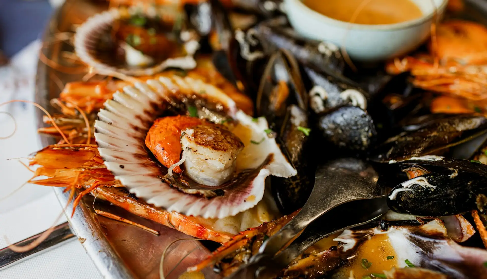
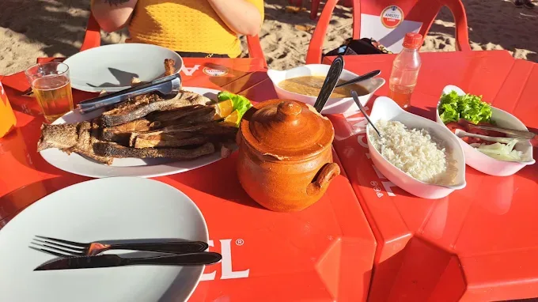
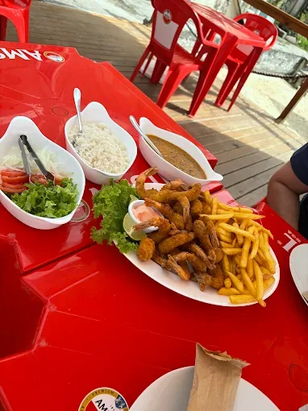
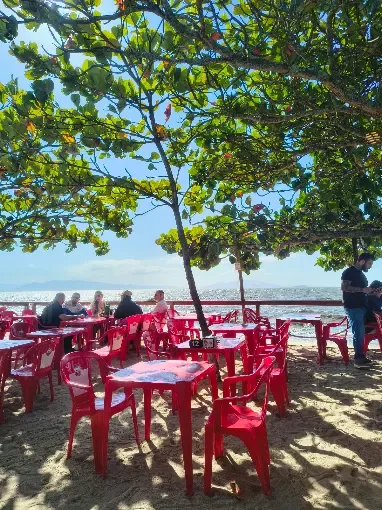
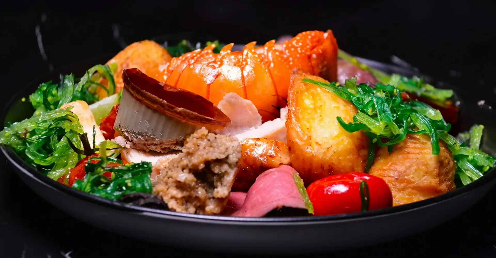

Siri na lata
O prato que dá nome à casa. Siri desfiado, refogado no tempero manezinho, gratinado e servido na própria latinha, com torradas para raspar até o fundo.

Petisco de mar, cerveja gelada e mesa cheia no Estreito.
Frutos do mar, porções e salgados feitos na hora para dividir com quem você gosta. De quarta a domingo, na Rua São José, 610.

O prato que dá nome à casa. Siri desfiado, refogado no tempero manezinho, gratinado e servido na própria latinha, com torradas para raspar até o fundo.
Camarão, lula, isca de peixe, kibe, pastel e batata frita em porções generosas. Chega à mesa quente, crocante e pensada para a turma toda.
Equipe Siri na LataAqui a ideia é simples: frutos do mar bem feitos, porção que chega fumegando e cerveja na temperatura certa. Cozinhamos com o que o mar da Grande Florianópolis oferece de melhor e servimos do jeito que a gente gosta de comer, sem pressa, com a mesa cheia e conversa boa.
Os mais pedidos da casa





Cervejas long neck e de garrafa, chope, caipirinhas, drinks, sucos e refrigerantes. Pergunte ao garçom pelas cervejas da semana.
Pedir para retirarPreços em reais, sujeitos a alteração sem aviso. Itens conforme disponibilidade do dia.
A casa
O Siri na Lata nasceu da vontade de juntar duas paixões da Ilha: frutos do mar fresquinhos e aquele bar de esquina onde todo mundo se sente em casa. Fica no Balneário Estreito, no continente, com mesas para o almoço de quarta a domingo e para o fim de tarde que vira noite.
A cozinha trabalha com siri, camarão, lula, peixe e ostras da região, preparados na hora. Para quem não come frutos do mar, tem kibe, pastel, batata frita, arroz e salada no mesmo capricho.
Nas paredes, quadros que contam um pouco da cultura local. Em alguns dias, música ao vivo para acompanhar o petisco.
Participamos do concurso com o torpedo de siri, servido com molho rosé de alho-poró e brócolis tostado na manteiga.



Do almoço em família à confraternização da firma, a gente separa a mesa e prepara tudo para você só chegar.
Até 10 pessoas
Sem custo
De 10 a 30 pessoas
Sem custo de reserva
A partir de 30 pessoas
Sob consulta
Pagamento: Pix, Cartão de crédito, Cartão de débito, Vale-refeição, DinheiroTaxa de serviço de 10% opcional.
Não achou o que procurava? Chama a gente no WhatsApp que a resposta vem rapidinho.
Falar com a genteNão é obrigatório, mas recomendamos para sexta, sábado e domingo e para grupos acima de 6 pessoas. A reserva é gratuita e feita pelo WhatsApp.
De quarta a sábado, das 11h às 22h. Aos domingos, das 11h às 17h. Segunda e terça a casa fica fechada.
Tem sim. Kibe, pastel de carne e de queijo, coxinha, batata frita, aipim, arroz e salada. Dá para montar uma mesa inteira sem frutos do mar.
Os petiscos do mar servem bem de 2 a 3 pessoas. Os pratos para dividir servem 2 pessoas e vêm com arroz, pirão e salada. A isca de peixe também tem meia porção.
Fazemos retirada no balcão: é só pedir pelo WhatsApp e passar para buscar. Para entrega, consulte a disponibilidade na hora do pedido.
Pix, cartões de crédito e débito, vale-refeição e dinheiro.
Pode e deve. Para grupos de 10 a 30 pessoas separamos uma área, você pode trazer o bolo e o aniversariante ganha uma porção de bolinho de siri. Combine pelo WhatsApp com 2 dias de antecedência.
Em alguns dias da semana, sim. A programação sai sempre no nosso Instagram.
No continente, a poucos minutos da Ponte Hercílio Luz.
| Segunda e terça | Fechado |
| Quarta a sábado | 11h às 22h |
| Domingo | 11h às 17h |